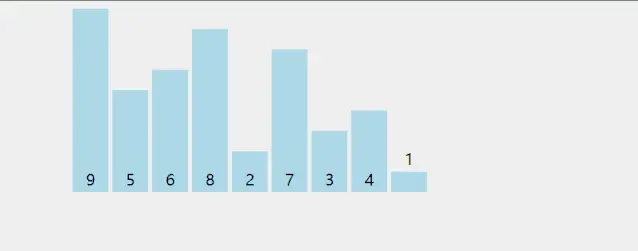
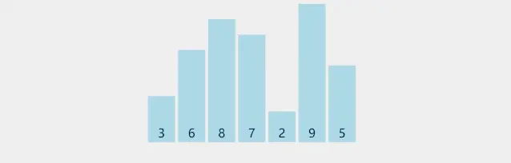
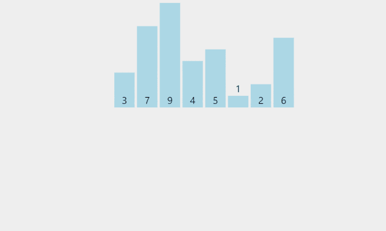
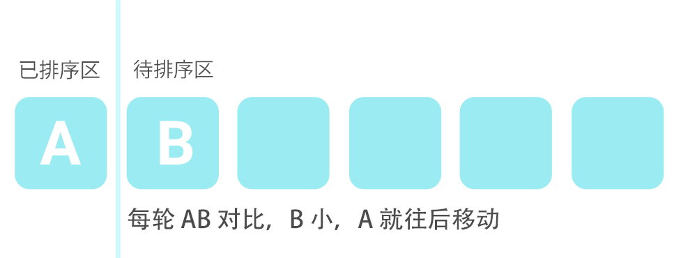
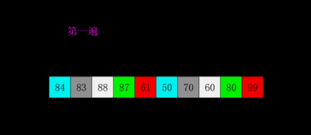
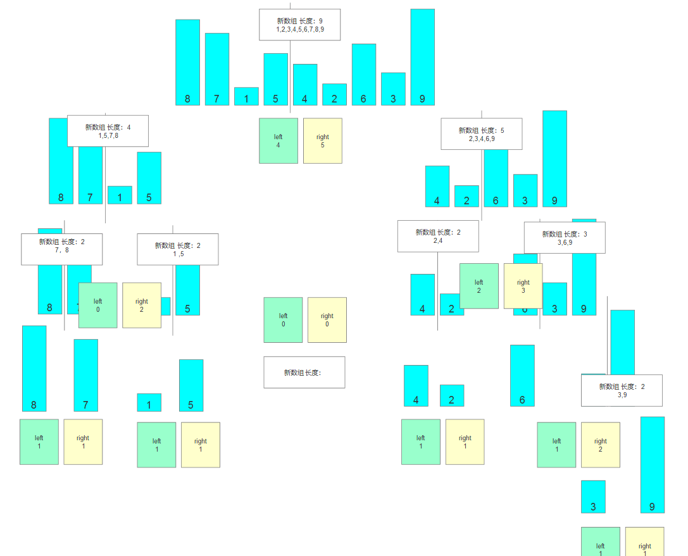
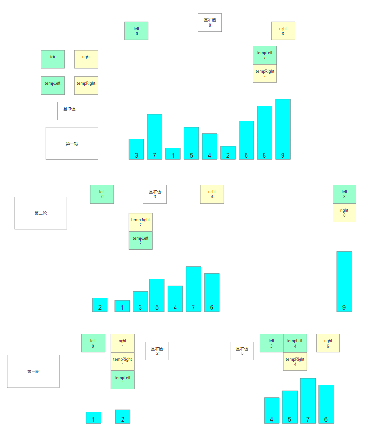
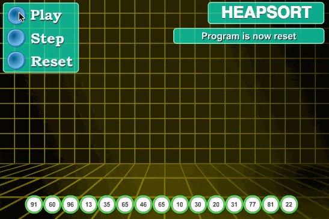

💡01 冒泡排序 了解即可
用于位置 两两交换排列，升序排列，降序排列
实现原理
可以类比 “水中气泡上浮”，核心是相邻元素两两比较，数值大的逐步向后挪动，每一轮都会把当前未排序区间里最大的元素 “沉” 到末尾。 具体执行步骤：
把数组分为两部分：末尾是「已排序区间」，开头是「未排序区间」，初始已排序区间长度为 0。
从头到尾遍历未排序区间，每遇到相邻的两个元素，若左边大于右边就交换它们的位置。
一轮遍历结束后，未排序区间里最大的元素就被交换到了未排序区间的最后一位，纳入已排序区间。
重复上述遍历，每一轮未排序区间长度减 1，直到未排序区间为空。 常见优化：如果某一轮遍历中一次交换都没有发生，说明数组已经完全有序，可以直接提前结束。
核心特点：稳定排序（相等元素不交换，保留原始相对顺序）、原地排序；最好时间复杂度 O (n)（完全有序 + 提前退出），平均 / 最坏 O (n²)；代码实现最简单，但整体效率偏低，数据量大时性能很差。

适用场景
游戏：
超小型 UI 列表排序（3~10 条条目，比如快捷栏道具排序、少量 Buff 优先级排序），代码极简，几行即可实现
算法教学与可视化演示，逻辑直观，是排序动画演示的首选算法
金融：
极少量记录的临时排序（5~20 条零散账目、小票据排序）
金融专业入门的算法教学演示场景
注：工业级项目几乎不会主动选用冒泡排序，整体性能弱于插入排序，仅适合极小数据量或教学场景
namespace 冒泡算法
{
internal class Program
{
static void Main(string[] args)
{
#region 冒泡算法
Random r = new Random(); //创建一个Random类实例
int[] array = new int[20]; //创建一个数组并分配空间
for (int i = 0; i < array.Length; i++)
{
array[i] = r.Next(1, 11);// 用Random类里的Next方法为 数组 随机赋值
Console.Write(array[i] + " "); //对数组进行便利并打印出来
}
Console.WriteLine();
int temp = 0; //创建一个临时工 用于数组中值交换
bool sort = false; //用于判断 轮数没有完全遍历，已经排序完成，不再执行交换
for (int m = 0; m < array.Length; m++)
{
sort = false;//假设已经不需要进行比较，那么就不会进入for循环
for (int i = 0; i < array.Length - 1 - m; i++)
//array.Length-1 为 数组实际值，-m 为减少轮数（已经交换位置后，不再进行比较）
{
if (array[i] >array[i + 1] )
//array[i] >array[i + 1] 为升序
//array[i] <array[i + 1] 为降序
//假设array[i]已经是最大的，array[i+1]的值小于array[i]，那么交换数值
{
temp = array[i];
array[i] = array[i + 1];
array[i + 1] = temp;
sort = true;//还需要比较，直接为true
}
}
if (!sort) //不需要比较不进入for循环,那么sort就为false,这里就直接退出循环
{
break;
}
}
for (int i = 0; i < array.Length; i++)//对交换地址后的数组进行遍历
{
Console.Write(array[i]+" ");
}
#endregion
}
}
} static int[] Sort(int[]array,bool isSort)
{
bool isRealSort;
int temp=0;
bool sort=false;
for(int i=0;i<array.Length;i++)
{
sort=false;
for (int j=0;j<array.Length-1-i;j++)
{
isRealSort=isSort?array[j]>array[j+1]:array[j]<array[j+1];
if(isRealSort)
{
temp=array[j];
array[j] = array[j+1];
array[j+1]=temp;
sort=true;
}
}
if(!sort)
{
break;
}
}
return array;
}
for(int i=0;i<array2.Length; i++)
{
Console.Write(" "+array2[i]+" ");
}
Sort(array2,false);💡02 选择排序 了解即可
用于位置中 指定（最大，或者最小）放入指定位置（第一个位置或着最后一个位置的）排列，
升序排列，降序排列
实现原理
和冒泡排序同属简单排序，但减少了交换次数：每一轮只查找最小值，全程只做一次交换。 具体执行步骤：
数组分为「已排序区间（开头）」和「未排序区间（后半段）」，初始已排序区间长度为 0。
遍历整个未排序区间，全程只记录最小元素的下标位置，不做交换。
遍历结束后，把找到的最小元素，和未排序区间的第一个元素交换位置，最小元素就纳入了已排序区间。
未排序区间起点后移一位，重复 “查找最小值 + 交换” 的过程，直到所有元素都进入已排序区间。
核心特点：不稳定排序（远距离交换可能打乱相等元素的原始顺序）、原地排序；时间复杂度稳定为 O (n²)，无论数据是否有序都要完整遍历比较；交换次数远少于冒泡排序，在 “交换数据成本很高” 的场景下有一定优势。

适用场景
游戏：
10~50 条小规模配置数据的离线排序，交换次数少，磁盘 / 内存读写开销低
嵌入式小游戏、极简脚本中的轻量排序，逻辑比插入排序更直观易写
金融：
几十条以内的小规模单据排序，适合存储介质读写速度慢、数据交换成本高的场景
算法入门教学，用于对比理解交换类排序的性能差异
注：工程实践中使用频率很低，整体性能不如插入排序，多用于教学理解。
namespace C_基础_14选择排序
{
internal class Program
{
static void Main(string[] args)
{
#region 选择排序
Random r = new Random(); //创建一个Random类实例
int[] array = new int[20]; //创建一个数组并分配空间
for (int i = 0; i < array.Length; i++)
{
array[i] = r.Next(1, 11);// 用Random类里的Next方法为 数组 随机赋值
Console.Write(array[i] + " "); //对数组进行便利并打印出来
}
Console.WriteLine();
int temp = 0; //创建一个临时工 用于数组中值交换
int index;//假设数组的第一个位置为最大或者最小值
// m为轮数，
for (int m = 0;m < array.Length;m++) {
index = 0;//每轮进入，0位为极值
for (int j = 1; j < array.Length -m; j++)
{
if (array[index] < array[j]) //抛出最大值
{
index = j; //如果 index位不是最大，那么就把j位记录到index;
}
}
if (index != array.Length - 1-m)
//进行位置交换，Length-1为 实际索引位，-m
//不会再跟已经放入最大数字的位置进行交换
{
temp = array[index];
array[index] = array[array.Length - 1-m];
array[array.Length - 1-m] = temp;
}
}
for (int i = 0;i<array.Length ; i++)
{
Console.Write(array[i] + " "); //对数组进行便利并打印出来
}
#endregion
}
}
}💡03 插入排序 掌握即可
实现原理
你可以把它理解成整理扑克牌的过程：手里的牌是已经排好序的，每新摸一张牌，就从后往前比对，插到合适的位置。
具体执行过程：
把数组分成两部分：前面是「已排序区间」，后面是「未排序区间」。初始状态下，已排序区间只有数组的第一个元素。
从第二个元素开始，依次取出未排序区间里的数，作为「待插入值」。
拿着这个待插入值，从已排序区间的末尾向前逐个比较：如果已排序的数比待插入值大，就把这个数向后挪一位，腾出空位。
直到找到第一个小于等于待插入值的数，把待插入值放进它后面的空位里，一次插入完成。
重复上述步骤，直到所有元素都插入到已排序区间，整个数组就有序了。
核心特点：稳定排序（相等的元素不会打乱原有相对顺序）、原地排序（不需要额外内存）；数据本身越接近有序，速度越快，最好情况接近 O (n)；数据量大且杂乱时效率低，时间复杂度为 O (n²)。


适用场景
游戏： 背包 / 任务栏 / 成就 UI 排序（20~50 条条目）,多人小房间实时分数排名（10~20 人内）
同优先级 UI 列表稳定排序（几十条内）
金融： 有序交易流水补录（补录几笔～十几笔）,个人持仓明细排序（几十只标的内）
对账数据局部校正（十几条错位记录内）
//实现升序 把 大的 放在最后面
int[] arr = new int[] { 8, 7, 1, 5, 4, 2, 6, 3, 9 };
/第一步
//能取出未排序区的所有元素进行比较
//i=1的原因：默认第一个元素就在排序区
for (int i = 1; i < arr.Length; i++)
{
//第二步
//每一轮
//1.取出排序区的最后一个元素索引
int sortIndex = i - 1;
//2.取出未排序区的第一个元素
int noSortNum = arr[i];
//第三步
//在未排序区进行比较
//移动位置
//确定插入索引
//循环停止的条件
//1.发现排序区中所有元素都已经比较完
//2.发现排序区中的元素不满足比较条件了
while (sortIndex >= 0 &&
arr[sortIndex] > noSortNum)
{
//只要进了这个while循环 证明满足条件
//排序区中的元素 就应该往后退一格
arr[sortIndex + 1] = arr[sortIndex];
//移动到排序区的前一个位置 准备继续比较
--sortIndex;
}
//最终插入数字
//循环中知识在确定位置 和找最终的插入位置
//最终插入对应位置 应该循环结束后
arr[sortIndex + 1] = noSortNum;
}
for (int i = 0; i < arr.Length; i++)
{
Console.WriteLine(arr[i]);
}
#region 知识点三 总结
//为什么有两层循环
//第一层循环：一次取出未排序区的元素进行排序
//第二层循环：找到想要插入的位置
//为什么第一层循环从1开始遍历
//插入排序的关键是分两个区域
//已排序区 和 未排序区
//默认第一个元素在已排序区
//为什么使用while循环
//满足条件才比较
//否则证明插入位置已确定
//不需要继续循环
//为什么可以直接往后移位置
//每轮未排序数已记录
//最后一个位置不怕丢
//为什么确定位置后,是放在sortIndex + 1的位置
//当循环停止时，插入位置应该是停止循环的索引加1处
//基本原理
//两个区域
//用索引值来区分
//未排序区与排序区
//元素不停比较
//找到合适位置
//插入当前元素
//套路写法
//两层循环
//一层获取未排序区元素
//一层找到合适插入位置
//注意事项
//默认开头已排序
//第二层循环外插入💡04 希尔排序 游戏开发（几乎不用）
实现原理
希尔排序是插入排序的优化版，核心是「分组插入排序 + 步长递减」：
它是插入排序的「优化版」，核心思路是：插入排序在数据量小、数据基本有序的时候特别快，那我就先想办法让数组变得 “基本有序”，最后再做一次插入排序。
具体执行过程：
先设定一个「间隔（gap）」，最经典的做法是初始 gap 等于数组长度的一半。
按下标间隔把数组分成 gap 个小组。比如 gap=4，那么下标 0、4、8… 是第一组，1、5、9… 是第二组，以此类推。
每个小组内部各自做插入排序。因为每组数据量很小，插入排序速度极快；做完之后，整个数组虽然还没完全有序，但已经 “大致有序” 了。
把 gap 缩小（比如每次减半），重复 “分组 + 组内插入排序”。数组的有序程度会越来越高。
当 gap 缩小到 1 时，整个数组就是一组，此时数组已经非常接近有序，再做一次完整的插入排序，就能快速完成整体排序。
核心特点：不稳定排序（分组排序会打乱相等元素的原始顺序）、原地排序；平均性能明显优于直接插入排序；不需要递归，栈内存开销极小，代码实现简单。

适用场景
游戏：
低配 / 嵌入式休闲游戏数据排序（500~5000 条分数 / 成就数据）
开发期配置表离线预处理（1000~10000 条怪物 / 关卡配置）
金融：
移动端轻量记账工具流水排序（1000~5000 条）
中小机构日终数据汇总（1 万条以内交易数据）
//希尔排序是插入排序的升级版//必须先掌握插入排序
//希尔排序的原理1.将整个待排序序列 2.分割成为若干子序列 3.分别进行插入排序
//总而言之 希尔排序对插入排序的升级主要就是加入了一个步长的概念
//通过步长每次可以把原序列分为多个子序列
//对子序列进行插入排序
//在极限情况下可以有效降低普通插入排序的时间复杂度
//提升算法效率
int[] arr = new int[] { 8, 7, 1, 5, 4, 2, 6, 3, 9 };
//学习希尔排序的前提条件
//先掌握插入排序
//第一步：实现插入排序
//第一层循环 是用来取出未排序区中的元素的
//for (int i = 1; i < arr.Length; i++)
//{
// //得出未排序区的元素
// int noSortNum = arr[i];
// //得出排序区中最后一个元素索引
// int sortIndex = i - 1;
// //进入条件
// //首先排序区中还有可以比较的 >=0
// //排序区中元素 满足交换条件 升序就是排序区中元素要大于未排序区中元素
// while (sortIndex >= 0 &&
// arr[sortIndex] > noSortNum)
// {
// arr[sortIndex + 1] = arr[sortIndex];
// --sortIndex;
// }
// //找到位置过后 真正的插入 值
// arr[sortIndex + 1] = noSortNum;
//}
//for (int i = 0; i < arr.Length; i++)
//{
// Console.WriteLine(arr[i]);
//}
//第二步：确定步长
//基本规则：每次步长变化都是/2
//一开始步长 就是数组的长度/2
//之后每一次 都是在上一次的步长基础上/2
//结束条件是 步长 <=0
//1.第一次的步长是数组长度/2 所以：int step = arr.length/2
//2.之后每一次步长变化都是/2 索引：step /= 2
//3.最小步长是1 所以：step > 0
for (int step = arr.Length / 2; step > 0; step/=2)
{
//注意：
//每次得到步长后 会把该步长下所有序列都进行插入排序
//第三步：执行插入排序
//i=1代码 相当于 代表取出来的排序区的第一个元素
//for (int i = 1; i < arr.Length; i++)
//i=step 相当于 代表取出来的排序区的第一个元素
for (int i = step; i < arr.Length; i++)
{
//得出未排序区的元素
int noSortNum = arr[i];
//得出排序区中最后一个元素索引
//int sortIndex = i - 1;
//i-step 代表和子序列中 已排序区元素一一比较
int sortIndex = i - step;
//进入条件
//首先排序区中还有可以比较的 >=0
//排序区中元素 满足交换条件 升序就是排序区中元素要大于未排序区中元素
while (sortIndex >= 0 &&
arr[sortIndex] > noSortNum)
{
//arr[sortIndex + 1] = arr[sortIndex];
// 代表移步长个位置 代表子序列中的下一个位置
arr[sortIndex + step] = arr[sortIndex];
//--sortIndex;
//一个步长单位之间的比较
sortIndex -= step;
}
//找到位置过后 真正的插入 值
//arr[sortIndex + 1] = noSortNum;
//现在是加步长个单位
arr[sortIndex + step] = noSortNum;
}
}
for (int i = 0; i < arr.Length; i++)
{
Console.WriteLine(arr[i]);
}
知识点三 总结
//基本原理
//设置步长
//步长不停缩小
//到1排序后结束
//具体排序方式
//插入排序原理
//套路写法
//三层循环
//一层获取步长
//一层获取未排序区元素
//一层找到合适位置插入
//注意事项
//步长确定后
//会将所有子序列进行插入排序
💡05 归并排序 中大项目 / 后端（进阶）
实现原理
典型的分治算法，核心逻辑是「先拆碎，再合并」，把大问题拆成无数个小问题解决，再把结果拼起来。
整个过程分两大阶段：
拆分阶段（分） 把数组从中间平均切成左右两半，得到两个子数组；再对每个子数组继续从中间切分，一直递归切下去，直到每个子数组都只剩 1 个元素 —— 单个元素天然就是有序的，拆分结束。
合并阶段（治） 把两个有序的小数组合并成一个有序的大数组。合并用「双指针法」：
两个指针分别指向两个小数组的开头；
每次比较两个指针指向的数字，把更小的那个放进临时数组，对应指针向后移动一位；
其中一个数组走完后，把另一个数组剩下的所有数字直接拼到临时数组末尾。
从最小的单元素数组开始，一层层向上合并，最终得到完整的有序数组。
核心特点：稳定排序（合并时相等元素优先取左边的，天然保留原始顺序）；时间复杂度稳定为 O (nlogn)，无论数据多乱都不会退化；缺点是数组排序需要 O (n) 的额外临时空间；天然支持多路合并和外部排序，特别适合处理内存装不下的海量数据。

适用场景
游戏：
多分区全服排行榜合并（单区十万级，合并后百万级玩家）
战斗伤害日志稳定排序（数千～数万条伤害记录）
海量用户行为日志离线排序（GB/TB 级，百万～亿条）
链表结构数据排序（技能链 / Buff 队列，百～上万个节点）
金融：
海量日终交易流水排序（TB 级，千万～亿级记录）
多源行情数据多路合并（多路万级报价序列）
合规对账明细稳定排序（十万～百万级明细）
风控行为时序序列处理（十万～百万级行为事件）
static void Main(string[] args)
{
Console.WriteLine("归并排序");
int[] arr = new int[] { 8, 7, 1, 5, 4, 2, 6, 3, 9 };
arr = Merge(arr);
for (int i = 0; i < arr.Length; i++)
{
Console.WriteLine(arr[i]);
}
}
public static int[] Sort(int[] left, int[] right)
{
//先准备一个新数组
int[] array = new int[left.Length + right.Length];
int leftIndex = 0;//左数组索引
int rightIndex = 0;//右数组索引
//最终目的是要填满这个新数组
//不会出现两侧都放完还在进循环
//因为这个新数组的长度 是根据左右两个数组长度计算出来的
for (int i = 0; i < array.Length; i++)
{
//左侧放完了 直接放对面右侧
if( leftIndex >= left.Length )
{
array[i] = right[rightIndex];
//已经放入了一个右侧元素进入新数组
//所以 标识应该指向下一个嘛
rightIndex++;
}
//右侧放完了 直接放对面左侧
else if( rightIndex >= right.Length )
{
array[i] = left[leftIndex];
//已经放入了一个左侧元素进入新数组
//所以 标识应该指向下一个嘛
leftIndex++;
}
else if( left[leftIndex] < right[rightIndex] )
{
array[i] = left[leftIndex];
//已经放入了一个左侧元素进入新数组
//所以 标识应该指向下一个嘛
leftIndex++;
}
else
{
array[i] = right[rightIndex];
//已经放入了一个右侧元素进入新数组
//所以 标识应该指向下一个嘛
rightIndex++;
}
}
//得到了新数组 直接返回出去
return array;
}
//第二步：
//递归平分数组
//结束条件为长度小于2
public static int[] Merge(int[] array)
{
//递归结束条件
if (array.Length < 2)
return array;
//1.数组分两段 得到一个中间索引
int mid = array.Length / 2;
//2.初始化左右数组
//左数组
int[] left = new int[mid];
//右数组
int[] right = new int[array.Length - mid];
//左右初始化内容
for (int i = 0; i < array.Length; i++)
{
if (i < mid)
left[i] = array[i];
else
right[i - mid] = array[i];
}
//3.递归再分再排序
return Sort(Merge(left), Merge(right));
}💡06 快速排序 工作高频用到（必学）
实现原理
同样基于分治思想，但和归并排序的 “先拆后合” 不同，它的核心是选一个基准数，把数组分成两半，让基准数直接落到最终的正确位置上。
具体执行过程：
选择基准：从数组里挑一个数作为「基准值（pivot）」。常见选法有三数取中（首、中、尾三个数里取中间值）、随机选取等，目的是避免最坏情况。
分区操作：用左右两个指针从数组两头向中间走：
左指针从左往右找，找到比基准值大的数就停下；
右指针从右往左找，找到比基准值小的数就停下；
交换这两个数，然后继续向中间走；
直到两个指针相遇，把基准值交换到相遇的位置。 做完这一步，基准值左边全是小于等于它的数，右边全是大于等于它的数，基准值自己就落在了最终排序后的正确位置上。
递归排序：对基准左边的子数组、右边的子数组，分别重复 “选基准 + 分区” 的操作。
当子数组长度为 0 或 1 时，天然有序，递归结束。
核心特点：不稳定排序（分区交换会打乱相等元素的原始顺序）；近似原地排序，仅需 O (logn) 的递归栈空间；平均时间复杂度 O (nlogn)，缓存友好，实际运行效率是通用排序里最高的；最坏情况 O (n²)，但通过合理选基准可以几乎避免。

适用场景
游戏：
全服战斗力 / 等级排行榜（数十万～百万级玩家）
物理引擎碰撞体空间排序（数千～数万个碰撞体）
匹配池玩家综合排序（数万～数十万待匹配玩家）
场景资源加载优先级排序（数千个资源对象）
金融：
股票 / 基金实时行情排行（数千只股票、上万只基金）
量化交易历史回测数据排序（千万～亿级 Tick/K 线数据）
海量客户资产分层（百万级客户）
风控指标分位计算（十万～百万级用户评分）
using System;
namespace Lesson28_快速排序
{
class Program
{
static void Main(string[] args)
{
Console.WriteLine("快速排序");
int[] arr = new int[] { 8, 7, 1, 5, 4, 2, 6, 3, 9 };
QuickSort(arr, 0, arr.Length - 1);
for (int i = 0; i < arr.Length; i++)
{
Console.WriteLine(arr[i]);
}
}
#region 知识点一 快速排序基本原理
//选取基准
//产生左右标识
//左右比基准
//满足则换位
//排完一次
//基准定位
//左右递归
//直到有序
#endregion
#region 知识点二 代码实现
//第一步：
//申明用于快速排序的函数
public static void QuickSort(int[] array, int left, int right)
{
//第七步：
//递归函数结束条件
if (left >= right)
return;
//第二步：
//记录基准值
//左游标
//右游标
int tempLeft, tempRight, temp;
temp = array[left];
tempLeft = left;
tempRight = right;
//第三步：
//核心交换逻辑
//左右游标会不同变化 要不相同时才能继续变化
while(tempLeft != tempRight)
{
//第四步：比较位置交换
//首先从右边开始 比较 看值有没有资格放到表示的右侧
while (tempLeft < tempRight &&
array[tempRight] > temp)
{
tempRight--;
}
//移动结束证明可以换位置
array[tempLeft] = array[tempRight];
//上面是移动右侧游标
//接着移动完右侧游标 就要来移动左侧游标
while (tempLeft < tempRight &&
array[tempLeft] < temp)
{
tempLeft++;
}
//移动结束证明可以换位置
array[tempRight] = array[tempLeft];
}
//第五步：放置基准值
//跳出循环后 把基准值放在中间位置
//此时tempRight和tempLeft一定是相等的
array[tempRight] = temp;
//第六步：
//递归继续
QuickSort(array, left, tempRight - 1);
QuickSort(array, tempLeft + 1, right);
}
#endregion
#region 知识点三 总结
//归并排序和快速排序都会用到递归
//两者的区别
//相同点：
//1.他们都会用到递归
//2.都会把数组分成几部分
//不同点：
//1.归并排序递归过程中会不停产生新数组用于合并；快速排序不会产生新数组
//2.归并排序是拆分数组完毕后再进行排序；快速排序是边排序边拆分
//基本原理
//选取基准
//产生左右标识
//左右比基准
//满足则换位
//排完一次 基准定位
//基准左右递归
//直到有序
//套路写法
//基准值变量
//左右游标记录
//3层while循环
//游标不停左右移动
//重合则结束
//结束定基准
//递归排左右
//错位则结束
//注意事项
//左右互放
//while循环外定基准
#endregion
}
}💡07 堆排序 工作高频用到（必学）
实现原理
基于二叉堆数据结构的排序算法，本质是利用 “堆顶永远是最值” 的特性，逐个取出最大值完成排序，属于选择排序的高阶优化版。 先明确基础概念：大顶堆是一种完全二叉树，满足任意父节点的值都大于等于子节点，堆顶（根节点）就是整个堆的最大值；堆可以直接用数组存储，不需要额外的树结构指针。 具体执行步骤：
建堆：把原始数组调整成一个大顶堆，此时数组第一个元素（堆顶）就是全局最大值。
交换堆顶：把堆顶元素和当前堆的最后一个元素交换，最大值就落到了数组末尾，相当于完成了一个元素的最终排序。
调整堆：把剩下的元素重新调整恢复成大顶堆，此时新的堆顶又是剩余元素里的最大值。
重复 “交换堆顶 → 调整堆” 的过程，堆的长度逐步缩小，已排序元素从末尾向前逐步增加，直到堆为空，整个数组有序。
核心特点：不稳定排序（堆调整过程会打乱相等元素顺序）、原地排序（仅需常数级额外空间）；时间复杂度稳定为 O (nlogn)，没有最坏情况退化；不需要额外内存，空间表现优于归并排序；但缓存友好性弱于快速排序，实际运行速度通常略慢于快排。

适用场景
游戏：
全服排行榜 Top N 查询（百万级玩家中取前 100 / 前 1000 名），无需全量排序，用小顶堆即可在线维护 Top 榜单，是游戏排行榜的核心实现方案之一
物理引擎碰撞检测优先级排序（数千个碰撞体），需要稳定的 O (nlogn) 性能，避免极端场景卡顿
任务 / 事件优先级队列，动态插入任务并快速取出最高优先级项
金融：
行情 Top N 筛选（上万只基金 / 股票中取涨幅前 10、成交额前 20），无需全排序即可快速得到极值
风控系统大额交易筛选，从海量交易流中实时维护金额最高的 Top K 交易
对最坏时间复杂度有严格要求的批量排序场景，避免快速排序最坏退化导致的系统超时
补充：堆排序最广泛的用途不是全量排序，而是动态维护 Top K 元素和实现优先级队列，这是它在工业界的核心价值。
using System;
namespace Lesson29_堆排序
{
class Program
{
static void Main(string[] args)
{
Console.WriteLine("堆排序");
int[] arr = new int[] { 8, 7, 1, 5, 4, 2, 6, 3, 9 };
HeapSort(arr);
for (int i = 0; i < arr.Length; i++)
{
Console.WriteLine(arr[i]);
}
}
#region 知识点一 堆排序基本原理
//构建二叉树
//大堆顶调整
//堆顶往后方
//不停变堆顶
//关键规则
//最大非叶子节点：
//数组长度/2 - 1
//父节点和叶子节点：
//父节点为i
//左节点2i+1
//右节点2i+2
#endregion
#region 知识点二 代码实现
//第一步：实现父节点和左右节点比较
/// <summary>
///
/// </summary>
/// <param name="array">需要排序的数组</param>
/// <param name="nowIndex">当前作为根节点的索引</param>
/// <param name="arrayLength">哪些位置没有确定</param>
static void HeapCompare(int[] array, int nowIndex, int arrayLength)
{
//通过传入的索引 得到它对应的左右叶子节点的索引
//可能算出来的会溢出数组的索引 我们一会再判断
int left = 2 * nowIndex + 1;
int right = 2 * nowIndex + 2;
//用于记录较大数的索引
int biggerIndex = nowIndex;
//先比左 再比右
//不能溢出
if( left < arrayLength && array[left] > array[biggerIndex])
{
//认为目前最大的是左节点 记录索引
biggerIndex = left;
}
//比较右节点
if( right < arrayLength && array[right] > array[biggerIndex] )
{
biggerIndex = right;
}
//如果比较过后 发现最大索引发生变化了 那就以为这要换位置了
if( biggerIndex != nowIndex )
{
int temp = array[nowIndex];
array[nowIndex] = array[biggerIndex];
array[biggerIndex] = temp;
//通过递归 看是否影响了叶子节点他们的三角关系
HeapCompare(array, biggerIndex, arrayLength);
}
}
//第二步：构建大堆顶
static void BuildBigHeap(int[] array)
{
//从最大的非叶子节点索引 开始 不停的往前 去构建大堆顶
for (int i = array.Length / 2 - 1; i >= 0 ; i--)
{
HeapCompare(array, i, array.Length);
}
}
//第三步：结合大堆顶和节点比较 实现堆排序 把堆顶不停往后移动
static void HeapSort(int[] array)
{
//构建大堆顶
BuildBigHeap(array);
//执行过后
//最大的数肯定就在最上层
//往屁股后面放 得到 屁股后面最后一个索引
for (int i = array.Length - 1; i > 0; i--)
{
//直接把 堆顶端的数 放到最后一个位置即可
int temp = array[0];
array[0] = array[i];
array[i] = temp;
//重新进行大堆顶调整
HeapCompare(array, 0, i);
}
}
#endregion
#region 知识点三 总结
//基本原理
//构建二叉树
//大堆顶调整
//堆顶往后方
//不停变堆顶
//套路写法
//3个函数
//1个堆顶比较
//1个构建大堆顶
//1个堆排序
//重要规则
//最大非叶子节点索引：
//数组长度/2 - 1
//父节点和叶子节点索引：
//父节点为i
//左节点2i+1
//右节点2i-1
//注意：
//堆是一类特殊的树
//堆的通用特点就是父节点会大于或小于所有子节点
//我们并没有真正的把数组变成堆
//只是利用了堆的特点来解决排序问题
#endregion
}
}💡08 排序应用场景
工业级项目中，7 种排序的实际生产价值天差地别：
核心主力排序：快速排序（含优化版内省排序）、归并排序、堆排序 —— 99% 的生产场景都围绕这三类
辅助补充排序：插入排序 —— 仅作为复杂排序的小数组兜底优化，极少单独作为主力
几乎不落地：冒泡排序、选择排序、希尔排序 —— 仅用于教学、极小规模 / 资源极度受限场景
游戏领域 分规模选型
小游戏 / 休闲游戏（小程序、H5、单机休闲，算力弱、代码要求轻量化）
核心选型：插入排序为主，极小规模用冒泡，千级配置数据可用希尔排序选型逻辑：数据量小于 1000 条时，快排的递归、分区常数开销反而高于插入排序；且复杂排序代码体积大，不符合小游戏轻量化、快速开发的需求。
具体落地场景：
背包、道具栏、任务列表排序（20~50 条）：插入排序，常数项极低，几行代码即可实现
房间内实时分数排名（10~20 人）：插入排序，单名玩家分数更新时仅需一次插入，无需全量重排
快捷栏、Buff 优先级排序（5~10 条）：冒泡排序，逻辑最简单，开发成本最低
离线配置表预处理（1000~5000 条怪物 / 关卡数据）：希尔排序，无递归栈开销，原地排序不占额外内存，适合开发工具脚本
---
- 中型游戏（独立游戏、中度网游，玩家万～十万级，有完整后端）
核心选型：快速排序（内省排序，绝对主力）+ 插入排序（小数组自动降级）+ 堆排序（Top N 实时榜单）行业现状：几乎不会手写排序算法，直接调用语言标准库（如 C# Array.Sort、C++ std::sort），底层均为「快速排序 + 堆排序 + 插入排序」混合的内省排序，自动适配不同数据规模。
具体落地场景：
全服玩家排行榜（十万级玩家）：内省排序，全量更新榜单时性能最优
匹配池玩家排序（数万待匹配用户）：快速排序，按段位、网络延迟等多维度排序，速度快
本地 UI 列表（背包、成就，几十到几百条）：标准库自动降级为插入排序，适配小数据场景
实时战力 Top100 榜单：堆排序（小顶堆），玩家战力动态更新时无需全量重排，仅需调整堆结构，性能提升一个量级
物理引擎碰撞体排序（数千个碰撞体）：快速排序，按空间坐标排序做碰撞检测裁剪，缓存友好、实际运行速度快
---
- 大型游戏（MMO、大逃杀、开放世界，玩家百万级，多分区 + 海量日志架构）
核心选型：快速排序（内省排序，全量排序主力） + 归并排序（多路合并、外部排序、稳定场景） + 堆排序（实时 Top K） + 插入排序（底层兜底）选型逻辑：按场景精准选型，不会一种排序走天下，不同业务模块用最适配的算法，兼顾性能、稳定性与内存开销。
具体落地场景：
全服玩家全量排序（百万级玩家）：内省排序，后端批量更新全服榜单的核心方案
多分区全服榜单合并：多路归并排序，每个大区的榜单本身已有序，归并合并时间复杂度 O (n)，远快于全量重排
实时巅峰榜 / 全服 Top100：堆排序（小顶堆），动态维护榜单，单条数据更新耗时仅 O (logk)，是实时排行榜的工业标准方案
战斗伤害日志排序（数千～数万条）：归并排序，稳定排序保证相同伤害值保留出手先后时序，避免战斗逻辑错乱
海量用户行为日志离线分析（TB 级、亿条数据）：外部归并排序，数据无法全量载入内存，分块排序后多路合并，是离线大数据排序的标准方案
技能链、Buff 队列等链表结构排序：归并排序，链表可通过指针调整完成合并，无需额外内存空间
---
三、金融领域 分规模选型
- 轻量金融工具（个人记账 App、小型理财工具，用户级数据，千级以内）
核心选型：插入排序为主，千级数据可用希尔排序选型逻辑：数据量小，性能完全足够，代码精简、安装包体积小，适配移动端轻量化需求。
具体落地场景：
个人交易流水排序（几百～几千条）：插入排序，流水本就按时间基本有序，接近 O (n) 的最优性能
个人持仓明细排序（几十只标的）：插入排序，稳定特性可保留相同金额标的的买入时间顺序
零散单据补录（几笔～十几笔）：插入排序，局部插入无需全量重排，效率极高
---
- 中型金融机构（村镇银行、地方营业部、小贷公司，数据万～十万级）
核心选型：快速排序（内省排序，主力） + 插入排序（小数组 / 局部调整）选型逻辑：以性能优先，对稳定性无强制要求的场景全用快排，仅对账等少量场景注意时序一致性。
具体落地场景：
日终交易数据汇总（万级记录）：快速排序，批量处理性能优异
客户资产分层排序（十万级客户）：快速排序，用于客户分级、营销筛选
少量错位账目校正：插入排序，局部调整效率远高于全量重排
---
- 大型核心金融系统（总行、头部券商、交易所，数据千万～亿级，高合规要求）
核心选型：归并排序（稳定排序、外部排序核心） + 快速排序（内省排序，非稳定批量处理） + 堆排序（实时 Top K）选型逻辑：合规优先，对稳定性、时序有严格要求的场景必须用归并排序；纯性能、无稳定要求的场景用快排；实时极值筛选用堆排序。
具体落地场景：
海量日终交易流水排序（TB 级、亿级记录）：外部归并排序，金融行业标准方案。数据无法全量载入内存，分块排序后多路合并；同时稳定排序保证相同时序的交易不打乱顺序，符合监管要求
合规对账、资金明细排序：归并排序，稳定排序保证相同金额的记录保留原始时间顺序，满足对账严谨性与合规要求
多源行情数据合并：多路归并排序，多个交易所的有序报价流合并为全局有序行情，效率远高于全量重排
股票 / 基金实时行情排行（数千只股票、上万只基金）：快速排序，实时更新涨跌幅、成交额排行，速度快，同涨跌幅的顺序不影响业务逻辑
实时行情 Top N 筛选（涨幅前 10、成交额前 20）：堆排序，动态维护极值，无需全量排序，响应速度极快
量化交易历史回测（千万～亿级 Tick/K 线数据）：内省排序（快排核心），对排序速度要求极高，无稳定性需求，追求极致性能
---
四、工业级排序选型口诀（落地原则）
小数组（百条以内）：选插入排序，常数项最低
大数组、无稳定要求：选快速排序（内省排序），实际性能最优
要求稳定、海量数据外排、多有序源合并：选归并排序
动态维护 Top K、实现优先级队列：选堆排序，不要做全量排序
冒泡、选择、希尔：非极端资源受限场景，不要在生产代码中使用，性能和可维护性均无优势